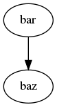

centroids
v0.1.8-16
Site
Contents:
Theory of Operation
Centroids API
Python API
Initialization Functions
Data Processing Functions
Page
Theory of Operation
« Welcome to ce...
Centroids API »
Source
Theory of Operation
¶
